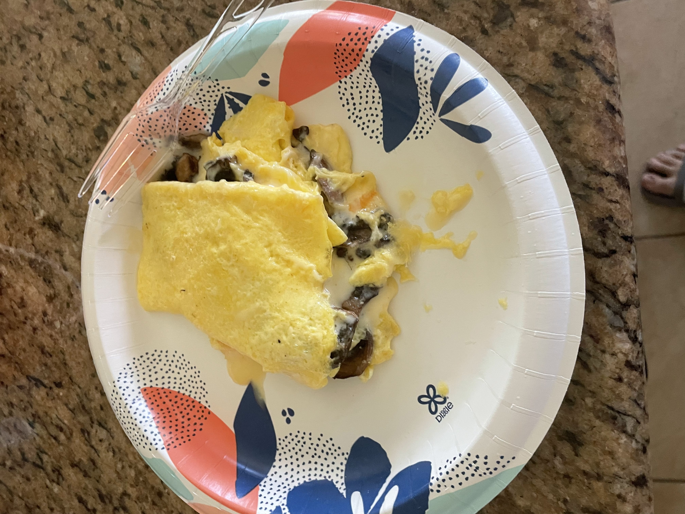

Home
Omelette Recipe

Description
This is a mushroom omelette recipe that I make pretty often.
It requires very few ingredients, it's easy to make, and
most importantly it's very delicious.
Ingredients
- 3-4 eggs
- Milk
- Oil or Butter
- Grated cheese
- Mushrooms (sliced)
Steps
- Heat up the pan and melt butter in the pan or add oil to the pan
- In a separate pan add 2 handfuls of mushrooms evenly placed in the pan, and let it cook
- Crack 3-4 eggs in a small bowl and whisk thoroughly
- Add a small amount of milk to the egg mix and whisk further until fully mixed
- Add the eggs to the pan and let it sit until there is a cooked layer underneath
- Fold the omelette half way, and add grated cheese inside
- Once the mushrooms are fully golden brown then add them on top of the cheese inside the omelette
- Fold the omelette once again until the mushrooms and the cheese are fully wrapped
- Let the omelette cook until you reach the desired consistency (runny vs well cooked)
- Carefully place the omelette in a plate, and enjoy.